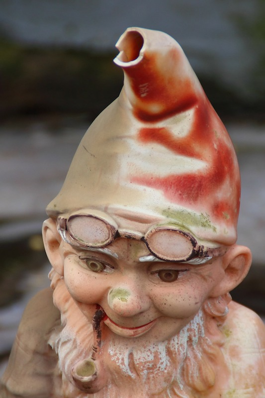

Home
The gnome is a small bar in the middle of Brisbane. We serve really good drinks, enjoy great music and cater to all walks of life. Have a brows through our list of food and drinks, look at some images or even come in and see for yourself.
We hope you enjoy the brand spanking new website. we most certainly do =D